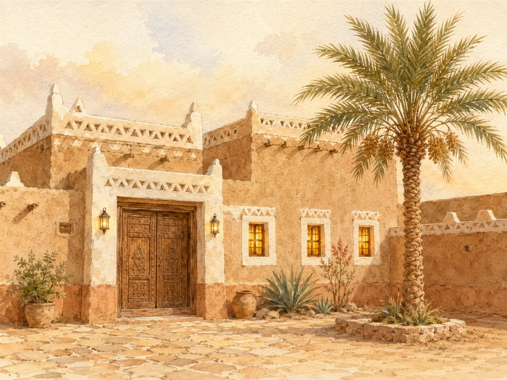
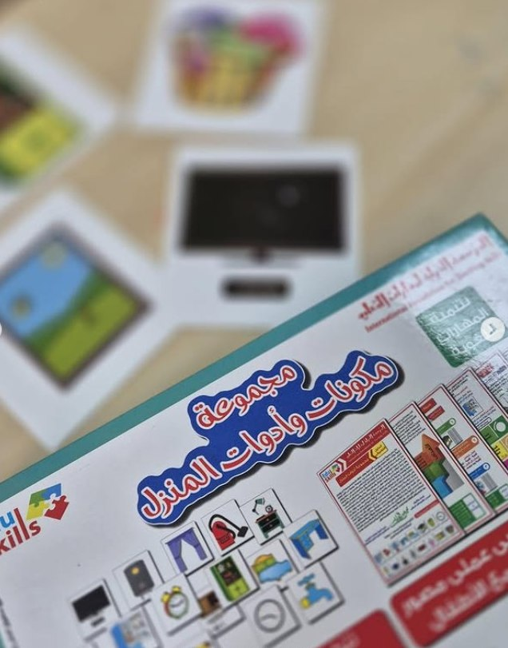
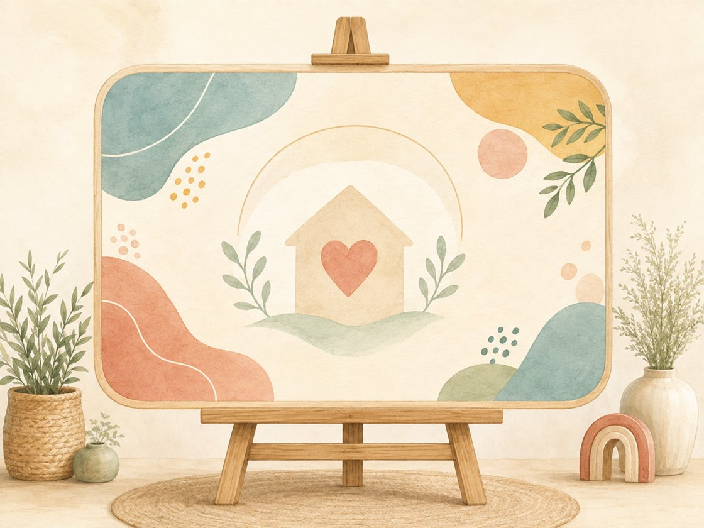

السلام عليكم ورحمة الله وبركاته يا طلاب العلم المباركين. نستمع الآن إلى إشارة بدء اللقاء لنعرف ماذا سيكون لقاؤنا.
الإشارة الثابتة: تُشغّل المعلمة أنشودة العلم هو النور الهادي علامةً ثابتةً لبدء لقاء علّمني ربي (لا تُسمّي المعلمة اللقاء)؛ فيتهيّأ الأطفال للجلوس والإنصات، ويتعرّفون بأنفسهم على اللقاء من إشارته.
فيديو إشارة بدء لقاء علّمني ربي — تستعين به المعلمة لضبط نغمة الإشارة (نفس إشارة المادة في جميع الوحدات).
الحزمُ مع الهدوء: تُدير المعلمةُ اللقاءَ بحزمٍ هادئ — صوتٌ لطيفٌ، وحدودٌ واضحة، وابتسامةٌ محتسبة — دون شدّةٍ تُنفّر ولا فوضى تُشتّت.
قوانين الفصل
أحافظ على نظافة فصليإماطة الأذى عن الطريق صدقة.
أستمع وأنصتفلا أقاطع الآخرين.
أحفظ لساني ويديالمسلم من سلم المسلمون من لسانه ويده.
أجلس جلسة صحيحةفي المساحة المخصصة لي.
أرفع يدي للمشاركةالسؤال للجميع والإجابة لمن تختاره المعلمة.
مراجعة سريعة وافتتاح الوحدة
هذا أول لقاء في وحدة جديدة؛ تُهيّئ المعلمة الأطفال بسؤال: ما الوحدة التي أنهيناها؟ ثم تقول: «اليوم نبدأ وحدة جديدة… انظروا ماذا سأعرض لكم» تمهيدًا لعرض صورة مسكن.
ورقة التدريس السريعة — خطوات اللقاء أثناء الدرس
① تهيئة وبداية اللقاء ٨ د
إشارة بدء اللقاء: أنشودة «العلم هو النور الهادي»، ويتعرّف الأطفال على اللقاء بأنفسهم.
تذكير الأطفال بقوانين الفصل الخمسة.
مراجعة سريعة وافتتاح وحدة المسكن بعرض صورة مسكن.
② بناء وسير اللقاء ١٤ د
الوصول لاسم الوحدة (وحدة المسكن) عبر صورة مسكن ومناقشة «ماذا ترون؟».
المسكن مع العائلة نعمة من الله: ﴿وَاللَّهُ جَعَلَ لَكُم مِّن بُيُوتِكُمْ سَكَنًا﴾.
المسكن يحمينا من البرد والحرّ، ومكانٌ آمنٌ نطمئن فيه.
ماذا نفعل في مسكننا؟ (نأكل · ننام · نقرأ · نصلي · نطبخ · نلعب) — أنشطة تزيد المودة.
③ إغلاق وتقويم ٨ د
النشاط المصاحب: مناقشة حرّة «ماذا نفعل في مسكننا؟».
أسئلة التغذية الراجعة.
دعاء كفارة المجلس وختام اللقاء.
ربط الأسرة: يتحدّث الطفل مع أسرته عمّا يفعلونه في مسكنهم، ويقولون معًا: «الحمد لله على نعمة العائلة والمسكن».
ورقةٌ مرجعية سريعة أثناء الدرس — الخطوات فقط دون الأهداف والزيادات؛ والنصّ الكامل في تبويب «دليل الدرس كامل».
سير اللقاء
اكتشاف الوحدة: تُخبرهم المعلمة أننا سنبدأ التعرّف على وحدة جديدة، ثم تعرض صورة مسكن وتسأل: ماذا ترون؟ وتناقشهم حتى تصل معهم إلى اسم الوحدة الجديدة: وحدة المسكن.

صورة المسكن التي تعرضها المعلمة هنا
المسكن نعمة من الله: تبيّن لهم أن الاجتماع في مسكن واحد مع العائلة نعمة من نعم الله ورزقه، وتتلو قوله تعالى: ﴿وَاللَّهُ جَعَلَ لَكُم مِّن بُيُوتِكُمْ سَكَنًا﴾.
لماذا المسكن نعمة؟ فالله أنعم علينا بنعمة المسكن مع عائلاتنا حتى يحمينا من برد الشتاء وحرارة الصيف، ويكون لنا مكانًا آمنًا نرتاح فيه ونطمئن.
من يحب مسكنه؟ تسألهم وتستمع لإجاباتهم، ثم تسأل: ماذا نفعل في مسكننا؟ وتعرض صور الأنشطة: نأكل · ننام · نقرأ · نصلي · نطبخ · نلعب.
المعنى المركزي: المسكن نعمة عظيمة من الله؛ نمارس فيه أنشطةً تزيد المودة والرحمة بين أفراد العائلة وتجعلهم آمنين في مسكنهم المبارك، فنحمد الله ونشكره على نعمة العائلة والمسكن.
الجملة الختامية: «الحمد لله على نعمة العائلة والمسكن» — يردّدها الأطفال.
وقفة مع نعمة المسكن (بيان قرآني مبسّط · ضمن سير الدرس)
قال الله تعالى: ﴿وَاللَّهُ جَعَلَ لَكُم مِّن بُيُوتِكُمْ سَكَنًا﴾. فالله أنعم علينا بنعمة المسكن مع عائلاتنا؛ يحمينا من برد الشتاء وحرارة الصيف، ويكون لنا مكانًا آمنًا نرتاح فيه ونطمئن، والاجتماع في مسكن واحد مع العائلة نعمة من نعم الله ورزقه.
ثم تقول المعلمة: «نحن نفعل في مسكننا أنشطةً تزيد المودة والرحمة بين أفراد العائلة: نأكل وننام ونقرأ ونصلي ونطبخ ونلعب — الحمد لله على نعمة العائلة والمسكن».
الوسائل والصور المعروضة في اللقاء
صورة مسكنتُعرض في التمهيد للوصول لاسم الوحدة

أدوات المنزللتقريب أنشطة المسكن

شرائح عرضصور أنشطة المسكن واضحة كبيرة الخط
الإغلاق — التغذية الراجعة
أسئلة التغذية الراجعة (مع الإجابات النموذجية)
من الذي أنعم علينا بنعمة المسكن؟الله وحده هو الذي جعل لنا من بيوتنا سكنًا، فنحمده ونشكره على نعمته.
لماذا المسكن نعمة؟ ومِمّ يحمينا؟لأنه يحمينا من برد الشتاء وحرارة الصيف، ويكون لنا مكانًا آمنًا نرتاح فيه ونطمئن.
ماذا نفعل في مسكننا؟نأكل وننام ونقرأ ونصلي ونطبخ ونلعب — وهي أنشطة تزيد المودة والرحمة بين أفراد العائلة، فنقول: الحمد لله على نعمة العائلة والمسكن.
تختار المعلمة سؤالين أو ثلاثة بحسب وقت الأطفال، وتُرشد الطفل إلى الإجابة برفق، ثم تدعو: «اللهم بارك لنا في مسكننا وعائلتنا واجعله لنا مأوى آمنًا مطمئنًا». المعيار: ٣ إجابات صحيحة على الأقل.
النشاط المصاحب
مناقشة حرّة: ماذا نفعل في مسكننا؟
الهدفأن يعبّر الطفل عمّا يفعله في مسكنه، ويدرك أن المسكن نعمة تزيد المودة، ويشكر الله عليها.
الأدواتصورة مسكن · بطاقات أنشطة المسكن (نأكل/ننام/نصلي…) · لوحة عرض.
صور النشاط وأدواته
صورة مسكنتُعرض ليتحدّث الطفل عمّا يفعله فيه
أدوات المنزلتقرّب أنشطة المسكن
لوحة عرضلعرض صور الأنشطة
خطوات التنفيذ
تعرض المعلمة صورة مسكن وتفتح مناقشة حرّة: ماذا نفعل في مسكننا؟
يذكر كل طفل نشاطًا يمارسه في مسكنه (نأكل / ننام / نقرأ / نصلي / نطبخ / نلعب).
تربط المعلمة: هذه الأنشطة تزيد المودة والرحمة بين أفراد العائلة وتجعلهم آمنين في مسكنهم المبارك.
تختم المعلمة: «الحمد لله على نعمة العائلة والمسكن».
أسئلة أثناء النشاط
ماذا نفعل في مسكننا؟
من يحب مسكنه؟ ولماذا؟
بماذا أنعم الله علينا في المسكن؟
اختيارات حسب حاجة الطفل
الخجول: يذكر نشاطًا واحدًا، ويُثنى عليه بـ«جزاك الله خيرًا».
السريع: يذكر عدّة أنشطة ويربطها بأجزاء المسكن.
كثير الحركة: يمثّل نشاطًا بحركة بسيطة بدورٍ منظّم.
دعاء ختام النشاطاللهم بارك لنا في مسكننا وعائلتنا، واجعله لنا مأوى آمنًا مطمئنًا، ولك الحمد على نعمتك.
اختيارات الأنشطة الإضافية
تلبية الاحتياجات الفرديةالبطيء: صور مكرّرة وإعادة السؤال بلطف. الخجول: «جزاك الله خيرًا» عند أول مشاركة. النشيط: يمثّل نشاطًا من أنشطة المسكن.
الربط بالمواد الأخرىقال رسولي: آداب المسكن. أدب واقتداء: آداب الاستئذان في البيت. مهاراتي: عدّ أجزاء المسكن.
التوسيع والإثراءبيتي: يذكر مع أسرته نعمة المسكن ويقول: «الحمد لله». فني: رسم مسكنه (بلا وجوه) وكتابة: مسكني نعمة.
اقتراحات للتكرار صور أنشطة المسكن للمراجعة السريعة 3 دقائق في مطلع الحصة قبل اللقاء التالي.
كفارة المجلس · خاتمة اللقاء
سبحانك اللهم وبحمدك، أشهد أن لا إله إلا أنت، أستغفرك وأتوب إليك.
العلاقة التكاملية لهذا اللقاء
الفكرة الناظمة لليوم: المسكن نعمة من الله تستوجب الشكر وحسن العيش فيه.
سؤال اليوم: من الذي أنعم عليّ بنعمة المسكن؟
هذا اللقاء: علّمني ربي — مفهوم المسكن.
كيف يتكامل هذا اللقاء مع بقية دروس اليوم والوحدة؟
التعليمُ التكامليّ = يعيشُ الطفلُ المعنى الواحد في كلّ حصص يومه؛ فلا يكون درسُ «مفهوم المسكن» جزيرةً منعزلة، بل خيطًا يربط القرآنَ واللغةَ والعددَ والأدبَ في تجربةٍ واحدة. وهذه جسورُ الربط العمليّة:
كتابي المنير — سورة الانفطار
ما تأمّله الطفلُ في علّمني (المسكنُ نعمةٌ من الله) يزدادُ رسوخًا حين يتدبّرُ سورةَ الانفطار في كتابي، فيجعلُ مسكنَه موطنَ طاعةٍ وشكرٍ لا موطنَ غفلة. حركةُ المعلمة: «بيتُنا الذي أنعم اللهُ به علينا نجعله مكانًا نطيعُ اللهَ فيه، كما نتعلّم في سورتنا».
لساني عربي — حرف الشين وكلمات المسكن
كلماتُ المسكن «شبّاك · فِراش · مِفتاح» يتعرّفُ الطفلُ على أصواتها ويميّزُ حرفَ الشين في لساني؛ فاللغةُ أداةٌ لتسمية نِعم البيت والتعبير عن شكرها. حركةُ المعلمة: «مَن يسمّي شيئًا في بيته يبدأ بصوت (شـ)؟».
مهاراتي — العدد ١٥ وعدُّ أدوات المسكن
عدُّ أدوات المسكن وأثاثه حتى العدد ١٥ يربطُ النظامَ العدديّ بترتيب البيت وحسن تدبيره؛ فكثرةُ النِّعم تستوجبُ كثرةَ الشكر. حركةُ المعلمة: «كم بابًا ونافذةً في صورتنا؟ عُدّوها معي وقولوا: الحمد لله».
أدب واقتداء
نعمةُ المسكن تُقابَلُ بأدبٍ فيه؛ فيطبّقُ الطفلُ آدابَ البيت عمليًّا (الاستئذان عند الدخول والتسليم). حركةُ المعلمة: «قبل أن ندخل بيتًا نستأذن ونسلّم؛ بيتُنا نِعمةٌ نحفظها بالأدب».
الأركان والأناشيد
نشيدُ المسكن ونشاطُ الأركان يُثبّتان معنى «المسكن نعمة» باللعب؛ فيبني الطفلُ مسكنًا بالمكعّبات ويردّدُ شكرَ الله. حركةُ المعلمة: ربطُ بناء الطفل في الركن بعبارة اليوم: «الحمد لله على المسكن».
فكرة للربط السريع
اسألي: كيف يخدم هذا اللقاء معنى اليوم؟ وما المعلومة التي سيخرج بها الطفل إلى اللقاء التالي (التعرّف على أنواع المساكن)؟
التقويم في منهج غرس القيم ثلاثي المراحل — يرصد الطفل قبل الدرس وأثناءه وبعده.
التقويم القبلي
أين تسكن؟
هل تعرف معنى المسكن؟
ماذا نفعل في المسكن؟
التقويم التكويني
متابعة تفاعل الأطفال أثناء عرض صورة المسكن
ما اسم وحدتنا الجديدة؟
لماذا المسكن نعمة؟
ماذا نفعل حين نرى نِعَم الله علينا؟
التقويم النهائي
ما معنى نعمة المسكن؟
مِمّ يحمينا المسكن؟
ماذا نفعل في مسكننا؟
المعيار: 3 إجابات صحيحة على الأقل
مؤشرات النجاح
المؤشر الوجداني
ظهور الطمأنينة والامتنان عند الحديث عن المسكن، وقول «الحمد لله» على نعمة المسكن بصدق.
المؤشر المعرفي
الإجابة الصحيحة على 3 أسئلة من أسئلة التقويم النهائي.
المؤشر السلوكي
الجلوس الهادئ والاستماع دون مقاطعة، والمشاركة باللطف.
المؤشر التطبيقي
التعبير عمّا يفعله في مسكنه، والمشاركة في المناقشة الحرّة.
الآداب الصفية لحظات تربوية ذهبية — تبدأ المعلمة كل فكرة بآية أو نص حديث، ولا يعلو صوتها على النص الشرعي. الحزم مع الهدوء دائمًا.
آداب المعلمة — مقدمة الرعاية
تبدأ بالبسملة والحمدلة والدعاء: «اللهم علّمنا ما ينفعنا وانفعنا بما علّمتنا».
تنطلق كل فكرة بآية أو نص حديث شريف.
الحزم مع الهدوء — فلا يعلو صوت المعلمة على النص الشرعي.
آداب الطفل
الجلوس في المساحة المخصصة له.
الاستماع وعدم المقاطعة.
المشاركة بلطف واحترام حديث الآخرين.
١ · الشكر على نعمة المسكن
الموقفقال طفل: «مسكننا صغير!»
الرد المقترح«المسكن نعمة عظيمة يؤوينا ويحمينا من البرد والحرّ. قل معي: الحمد لله على مسكننا».
القيمةالشكر — رؤية النعمة — القناعة.
ربط مباشر بالدرس: خلاصة اللقاء أن نحمد الله على نعمة المسكن.
٢ · الرضا بالمسكن وترك المقارنة
الموقفقالت طفلة: «مسكن صديقتي أجمل من مسكننا».
الرد المقترح«كل مسكن نعمة من الله يؤوينا ويطمئننا؛ لا نقارن، بل نحمد الله على مسكننا المبارك».
القيمةالرضا — الطمأنينة — البعد عن المقارنة.
ربط بالدرس: المسكن مكان آمن نطمئن فيه، وهو نعمة نشكر الله عليها.
الرد المقترح«المحافظة على نظافة مسكننا من شكر النعمة؛ تعاوَنّا مع أهلنا في ترتيبه وتنظيفه».
القيمةالنظافة — المسؤولية — شكر النعمة.
ربط بالدرس: مسكننا نعمة، والمحافظة عليه من شكر الله عليها.
٥ · الانتظار وضبط النفس
الموقفطفل يقاطع زميله أثناء حديثه عن مسكنه.
الرد المقترح«انتظر دورك يا بطل، ستُخبرنا عن مسكنك بعد قليل. حسن الاستماع من أدب المجلس. جزاك الله خيرًا».
القيمةضبط النفس — احترام الآخرين — أدب الإنصات.
ربط بالدرس: كما نطمئن في مسكننا، نحترم زملاءنا في المجلس.
القيمة تترسّخ حين تُعاش في البيت كما تُتعلَّم في الفصل — هذه التهيئات يُطبّقها ولي الأمر قبل الدرس وبعده.
١ · تهيئة وجدانية
أيُحدّث ولي الأمر طفله عن نعمة مسكنهم بمحبة، ويذكّره أن المسكن نعمة من الله.
بيقول له قبل النوم: «الحمد لله الذي جعل لنا مسكنًا يؤوينا ويطمئننا».
← يربط الطفل بين الدرس ومشاعره تجاه مسكنه في حياته الفعلية.
٢ · تهيئة معرفية
أيقرأ مع طفله ﴿وَاللَّهُ جَعَلَ لَكُم مِّن بُيُوتِكُمْ سَكَنًا﴾ ويشرح أن المسكن نعمة من الله.
بيسأله بلطف: «ماذا نفعل في مسكننا؟ ومِمّ يحمينا المسكن؟»
← يرسّخ المفهوم قبل سماعه في الصف.
٣ · تهيئة حسية
أيتجوّل مع طفله في أجزاء المسكن ويسمّيها، ويريه كيف يحميهم من الحرّ والبرد.
بيذكر معه الأنشطة التي يمارسونها فيه: نأكل، ننام، نصلي، نلعب…
← يعيش الطفل المعنى واقعيًا قبل عرضه في الصف.
٤ · تهيئة عملية بسيطة
أيجهّز مع الطفل بطاقة أو رسمًا بسيطًا لمسكنه (بلا وجوه) ليحمله إلى الصف.
بيساعده على ذكر ما يفعله في مسكنه.
← مشاركة الأسرة تعطي الطفل حافزًا للعرض أمام زملائه.
٥ · تهيئة سلوكية
أيشجّع طفله على المحافظة على نظافة المسكن وترتيبه والتعاون مع أهله.
بيذكّره: «المسكن نعمة نشكر الله عليها ونحافظ عليها».
← يصبح السلوك اليومي نفسه جزءًا من الدرس.
٦ · تهيئة بالقصص
يحدّث طفله كيف جعل الله المسكن مأوى نطمئن فيه ويحمينا من البرد والحرّ، ليتعلّم الطفل شكر الله على نعمة المأوى والأمان.
← الحديث يزرع الرضا والشكر معًا في وجدان الطفل.
أسئلة تطرحها على طفلك
ما اسم وحدتنا الجديدة في المركز؟
ما معنى نعمة المسكن؟
مِمّ يحمينا المسكن؟
ماذا نفعل في مسكننا؟
ماذا نقول شكرًا لله على مسكننا؟
نص رسالة جاهزة لولي الأمر (واتساب)
بسم الله الرحمن الرحيم السلام عليكم ورحمة الله وبركاته
بدأ طفلكم الكريم اليوم وحدة «المسكن» في مادة علّمني ربي. تعلّم أن المسكن نعمة عظيمة من الله؛ يحمينا من البرد والحرّ، ويكون لنا مكانًا آمنًا نطمئن فيه، ونمارس فيه أنشطةً تزيد المودة بين أفراد العائلة.
نشاط بيتي: تحدّثوا مع طفلكم عمّا تفعلونه في مسكنكم، وقولوا معًا: «الحمد لله على نعمة العائلة والمسكن».
جزاكم الله خيرًا على شراككم في تربية أبنائكم — فريق نادي غرس القيم
القيم الأساسية للدرس
الشكر
شكر الله على نعمة المسكن والمأوى — نعمة تستحق تجديد الحمد.
الأمان والطمأنينة
المسكن مكان آمن نرتاح فيه ونطمئن، يحمينا من البرد والحرّ.
المودة
أنشطة المسكن تزيد المودة والرحمة بين أفراد العائلة.
الرضا
الرضا بالمسكن والطمأنينة إلى نعمة الله فيه دون مقارنة.
محبة المسكن
الشعور بالانتماء والدفء تجاه المسكن ومحبته.
التوحيد
الله وحده هو الذي جعل لنا من بيوتنا سكنًا وأنعم علينا بالمأوى.
كيف تغرس المعلمة القيم أثناء الدرس؟
حين يذكر الطفل مسكنه: «هذه نعمة من الله» ثم المبادرة بـ«الحمد لله».
الأركان مساحاتٌ غنيّة بأدوات التعلّم، مدّتها ٣٠ دقيقة، يلعب فيها الأطفال ويستكشفون الأدوات بحرّية ومرح — لا التزام بآداب مجالس العلم كالمواد الأساسية. وتستقطع المعلمة وقتًا يسيرًا لتنفيذ نشاط تطبيقي سريع على الفكرة المركزية للدرس تأكيدًا وترسيخًا للمعلومة. أمام المعلمة ركنان مقترحان تختار بينهما (أو تنفّذهما معًا) بحسب جاهزية البيئة.
ضابط منهجي: الصور والوسائل لتقريب فكرة نعمة المسكن، دون صور ذوات أرواح أو تمثيل للأشخاص، ويبقى المقصود ترسيخ شكر نعمة المسكن والمأوى والأمان.
بيوت خشبية صغيرة ودُمى بيوت خشبية بلا ملامح وجه، وأثاث تمثيلي صغير (سرير، مائدة، أريكة، أدوات مطبخ آمنة)، بطاقات أنشطة المسكن بلا وجوه (نأكل · ننام · نقرأ · نصلي · نطبخ · نلعب)، لوحة «أنشطة مسكني»، وسلّة إكسسوارات منزلية آمنة.
قوانين الركن
البقاء في مساحة الركن · المحافظة على الأدوات · انتظار الدور · إعادة كل وسيلة إلى مكانها بعد اللعب.
اللعب الحرّ في الركن
يستكشف الأطفال البيوت الخشبية والأثاث والأدوات، ويمثّلون أنشطة مسكنهم (الطبخ · الأكل · النوم · اللعب...) بحرّية ومرح دون تكليف؛ فالركن مساحة لعب لا حلقة علم.
النشاط التطبيقي السريع
تستقطع المعلمة نحو ٥–٧ دقائق لتطبيق سريع على الفكرة المركزية للدرس: المسكن نعمة، وما نفعله فيه يزيد المودة والأمان.
يرتّب الطفل بطاقات أنشطة المسكن في البيت الخشبي ويذكر ماذا نفعل في كل مكان.
يتحدّث عمّا يفعله فعلًا في مسكنه بصوته.
يقول في الختام: «الحمد لله على نعمة العائلة والمسكن».
هدف الركن
أن يعبّر الطفل عمّا يفعله في مسكنه، ويدرك أنه نعمة، ويشكر الله عليها.
دور المعلمة
تُتيح اللعب الحرّ أولًا، ثم تستقطع وقتًا يسيرًا للنشاط التطبيقي، وتربطه بالفكرة المركزية بسؤال أو جملة قصيرة، بلا إطالة.
خصوصية عقدية وتربوية
الركن وسيلة تعبير عن نعمة المسكن، لا تمثيل للأشخاص؛ والصور والدُّمى بلا وجوه.
مناسب للفئة العمرية
خطوات قصيرة محسوسة، مع طفل أو مجموعة صغيرة في كل دورة حتى لا يزدحم الركن.
المخرج
بطاقة «أنشطة مسكني» يرتّبها الطفل + جملة يردّدها: الحمد لله على نعمة العائلة والمسكن.
نموذج تطبيقي للركن
أدوات المنزل التمثيليةيرتّبها الطفل ويذكر ماذا نفعل في مسكننا
الجملة الختامية: مسكني نعمة من الله، أحبّه وأشكر الله عليه.
قصص عن المسكن والبيوت
ركن أقرأ لأتعلّم
الأدوات والوسائل التعليمية
سلّة قصص وكتب مصوّرة عن المسكن والبيوت، حامل قصص، بطاقات مطابقة كلمة-صورة (بيت · مسكن · مأوى · سرير · مطبخ · باب)، بطاقات «أقرأ الصورة»، ووسادات جلوس هادئة.
قوانين الركن
البقاء في مساحة الركن · تقليب الكتب برفق · انتظار الدور · إعادة القصص إلى الرفّ.
اللعب الحرّ في الركن
يتصفّح الأطفال القصص والصور بحرّية، ويتأمّلون بيوتها ومساكنها، ويعبّرون عمّا يشاهدون دون تلقين.
النشاط التطبيقي السريع
تستقطع المعلمة دقائق يسيرة لتطبيق سريع على الفكرة المركزية: المسكن نعمة من الله يؤوينا ونطمئن فيه.
تقرأ المعلمة قصة قصيرة مصوّرة، ويتأمّل الطفل صورها.
يتحدّث الطفل عن مسكنه وما يفعله فيه، ويطابق كلمة بصورتها.
يختم بقول: «الحمد لله على نعمة العائلة والمسكن».
هدف الركن
تعزيز محبّة المسكن والرضا به وشكر الله عليه عبر القصّة والصورة، وإثراء مفردات الوحدة.
دور المعلمة
تترك الطفل يتصفّح ويستمتع، ثم تقرأ قصّة قصيرة وتربطها بالفكرة المركزية بسؤال واحد، وتصحّح المفردة برفق.
خصوصية عقدية وتربوية
القصص وسيلة لترسيخ معنى نعمة المسكن، والصور بلا وجوه، ولا مقارنة تُشعِر الطفل بنقص في مسكنه.
مناسب للفئة العمرية
قراءة موجّهة قصيرة جدًّا، مع اختيار طفل أو طفلين في كل دورة.
المخرج
بطاقة مفردة اليوم + جملة يردّدها الطفل عن نعمة مسكنه.
القصص المقترحة
كل البيوت مختلفةالمساكن مختلفة والجميع في نعمة
بيت بيوتنعمة المسكن والمأوى
مسكني نعمةالمسكن يحمينا ونطمئن فيه
الجملة الختامية: مسكني نعمة من الله، أحبّه وأشكر الله عليه.
وحدة المسكن · علّمني ربي · اللقاء الأول — مفهوم المسكن · نادي غرس القيم لضيافة الأطفال